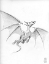

80
Je crie au dragon noir : « Kramm! Nous voici! Tu as intérêt à être prêt car cette fois-ci nous allons gagner ce combat! » Puis Flamm lance un rugissement puissant comme le tonnerre et nous fonçons dans le ciel vers le dragon ennemi! Mon combat contre Kramm est un défi spécial et très difficile! Tu devrais lancer plein de dés! Tu dois lancer deux dés comme lors d'un défi de bataille. Si mon épée est magique, tu peux alors lancer trois dés à la place. Maintenant regarde sur ta feuille de note. Tu peux lancer un dé de plus pour chaque objet ou souvenir trouvé durant cette aventure! Et si tu as trouvé un sac de piments forts ajoute encore un dé de plus! Le feu des dragons est encore plus puissant lorsqu'ils mangent de piments forts! Compte bien le nombre de dés car tu dois obtenir un total de 30 ou plus! Note: chaque pièce magique restante peut servir à relancer un dé qui serait tombé sur un nombre trop petit.
|